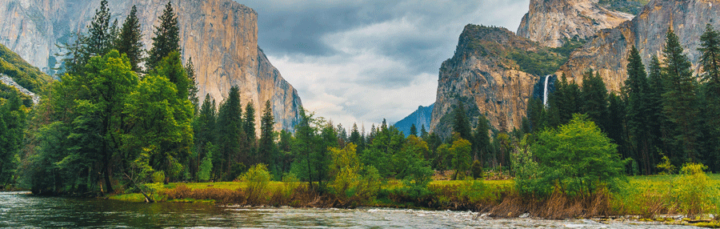

Boondock Camping For Beginners

The definition of boondock camping, is camping off-the-grid with an RV,
but we like to include tent camping this definition as well. It is also
sometimes referred to as “dry camping”. This means any time you go camping
without water, sewer, or electrical connections. You are camping in
unestablished areas and it is important to come prepared.
This website will get you started with what you need to know to in order to
go boondock camping. With a little preperation and planning ahead, boondock
camping can be a fun and relaxing escape from the business of life, as well
as budget friendly to your bank account!
Tent camping vs RV/Travel trailer camping
RV-Camping
Words about what it's like to go RV camping.
Tent-Camping
Words about what it's like go tent camping